1. 引入依赖包
通过如图所示的路径添加tar文件, 即可引入外部包.
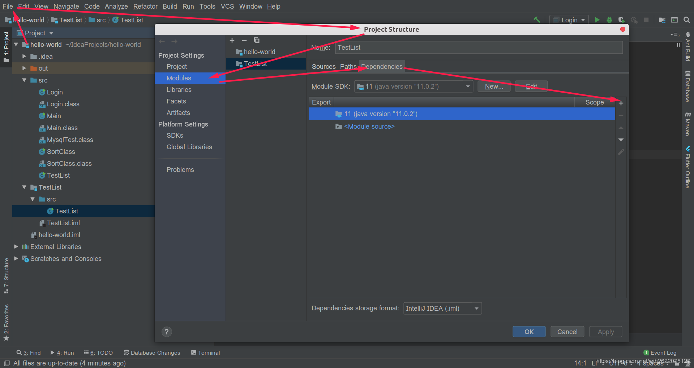
2. 单独运行一个java文件
在java文件上右键, 如果你写好了main函数就可以编译运行. 之前由于不熟悉java, 所以main的参数没有写String[] args, 所以一直无法运行.
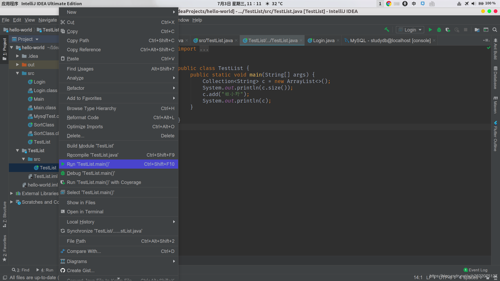
3. 修改class的模板
如加入作者, 时间等信息
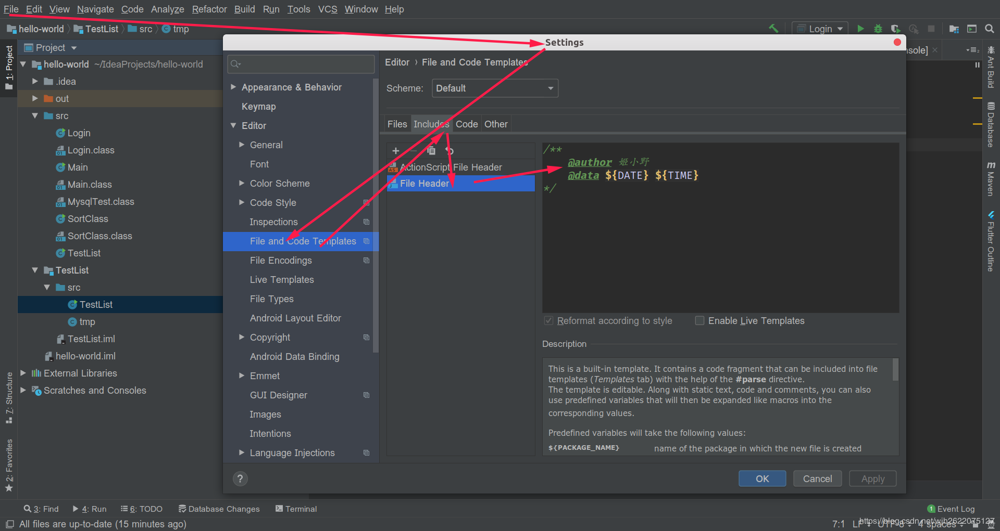
4. 生成javadoc
刚学java, 知道了这个工具觉得好神奇啊, 居然这么方便开发者.
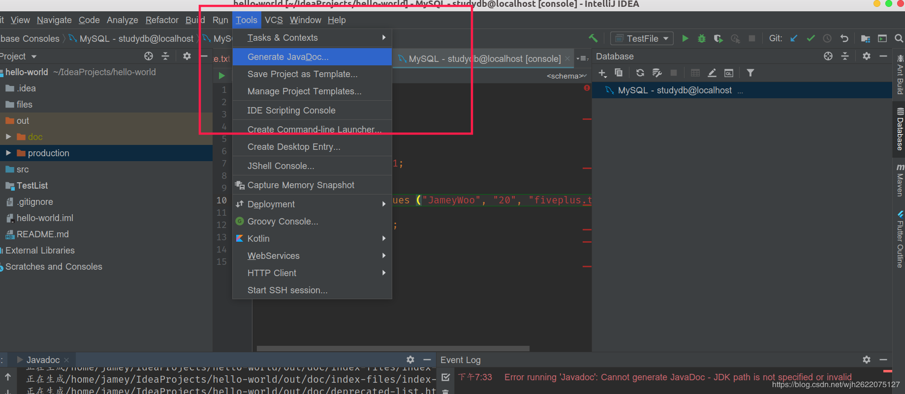
效果如图
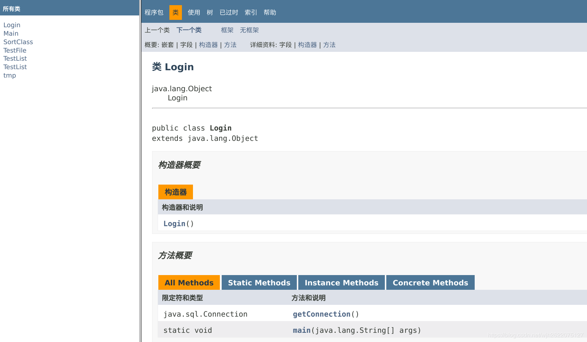
不过在我的电脑上, 用jdk11生成不了, 得换成jdk8.
5. git版本控制
在idea上进行版本控制很方便
在vcs这一栏开启之后就可以用git了.
有比较友好的图形操作界面.
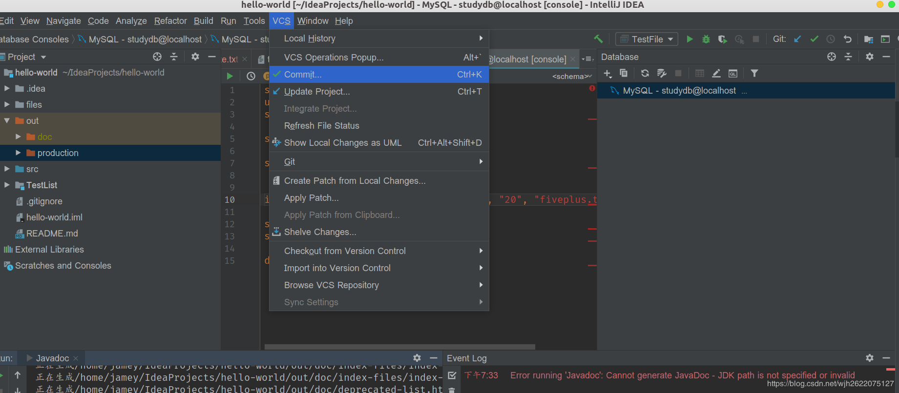
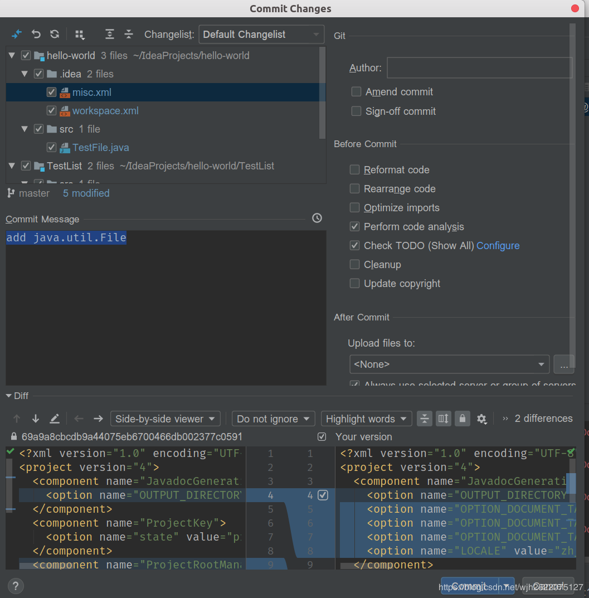
6. 操作数据库
在view这一栏找到工具, 配置好数据库就可以连接了.
然后在窗口上写sql语言, 下面的console就出现结果
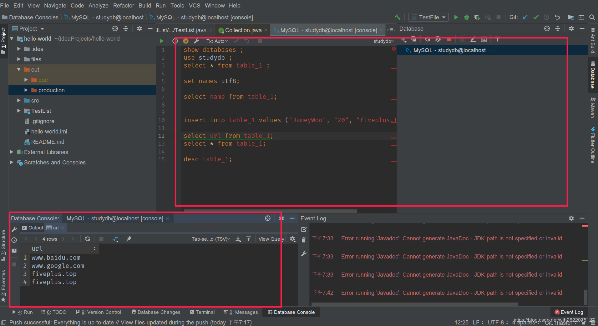
7. ctrl + 点击 可跳转到类的实现处
8. 设置终端
cmd真难受, 换成powershell好用多了
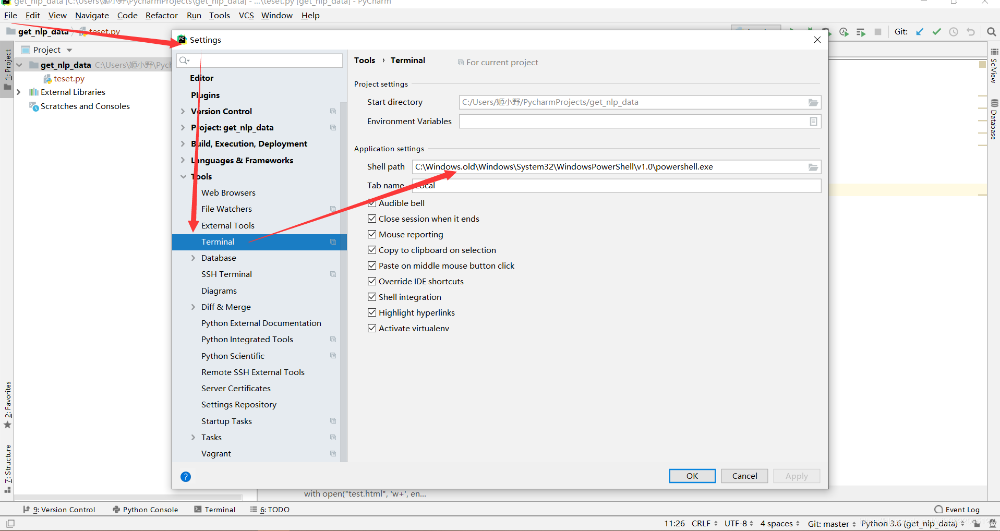
9. 设置代理
应该就不用每次都在代码里面弄了, scrapy配置socks真是麻烦死了啊.
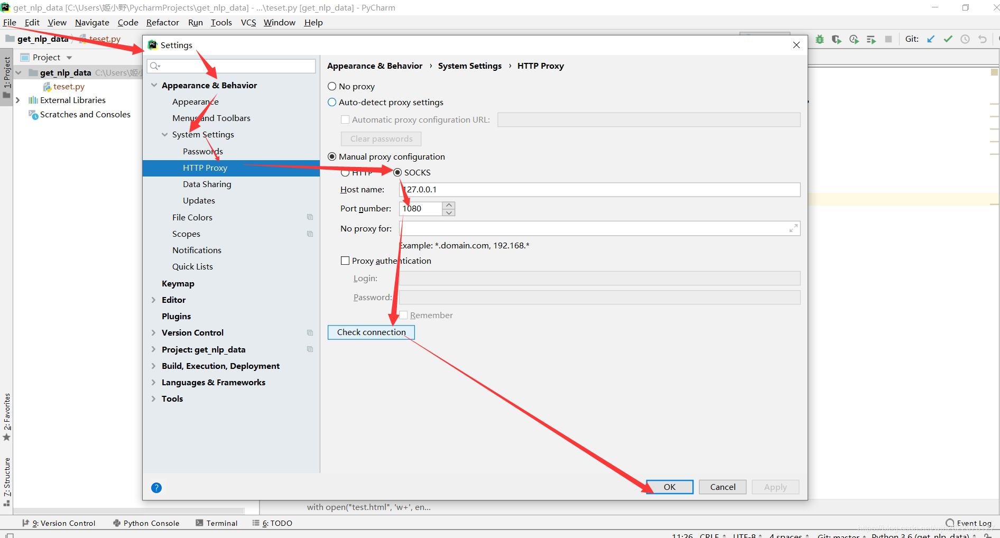
10. 格式化html
原先
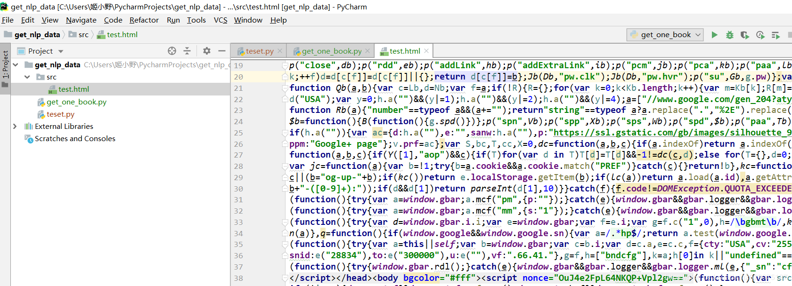
Code->Reformat Code 快捷键 Ctrl+Alt+L
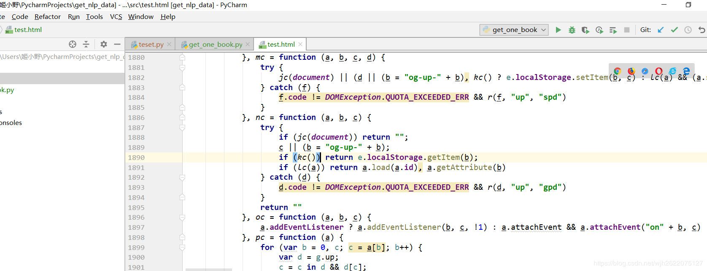
11. Sphinx 自动生成python文档
官网: http://www.sphinx-doc.org/en/master/#confval-language
sphinx_rtd_theme 主题github
简书上的好教程
效果
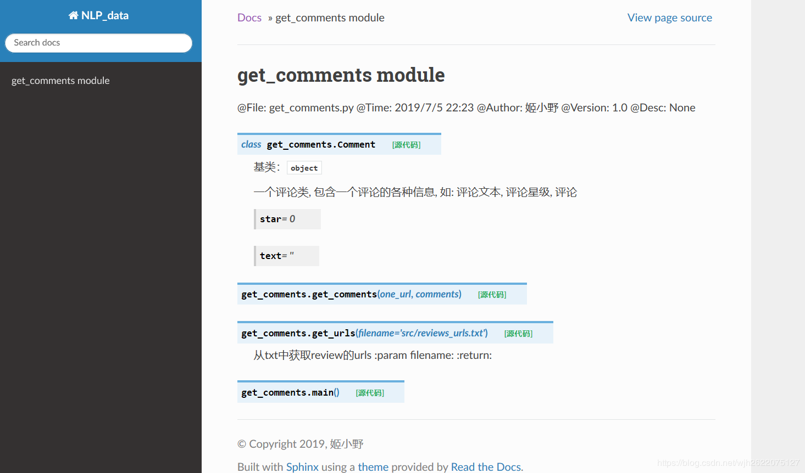
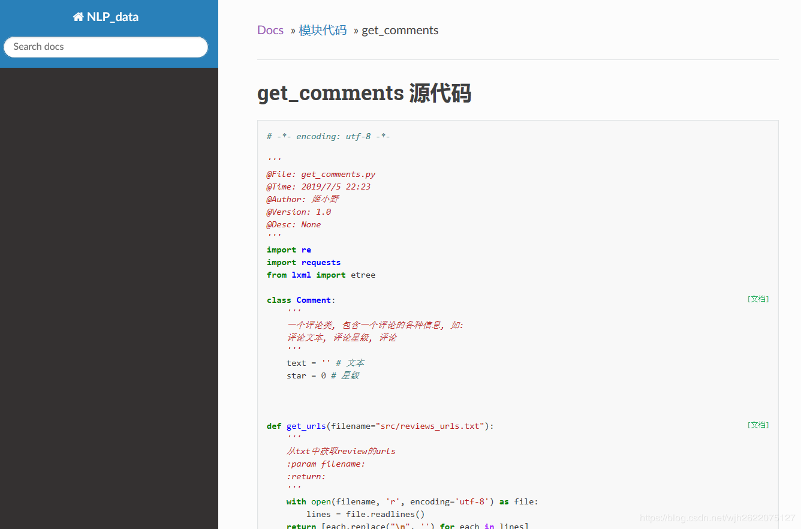
安装
pip install sphinx
mkdir doc_test
cd doc_test
执行sphinx-quickstart
下面是配置
1
2
3
4
5
6
7
8
9
10
11
12
13
14
15
16
17
18
19
20
21
22
23
24
25
26
27
28
29
30
31
32
33
34
35
36
37
38
39
40
|
PS C:\Users\姬小野\PycharmProjects\get_nlp_data\doc_test> sphinx-quickstart
Welcome to the Sphinx 2.1.2 quickstart utility.
Please enter values for the following settings (just press Enter to
accept a default value, if one is given in brackets).
Selected root path: .
You have two options for placing the build directory for Sphinx output.
Either, you use a directory "_build" within the root path, or you separate
"source" and "build" directories within the root path.
> Separate source and build directories (y/n) [n]: n
The project name will occur in several places in the built documentation.
> Project name: NLP_Books
> Author name(s): Jamey
> Project release []: v0.6
If the documents are to be written in a language other than English,
you can select a language here by its language code. Sphinx will then
translate text that it generates into that language.
For a list of supported codes, see
https://www.sphinx-doc.org/en/master/usage/configuration.html#confval-language.
> Project language [en]: zh_cn
Creating file .\conf.py.
Creating file .\index.rst.
Creating file .\Makefile.
Creating file .\make.bat.
Finished: An initial directory structure has been created.
You should now populate your master file .\index.rst and create other documentation
source files. Use the Makefile to build the docs, like so:
make builder
where "builder" is one of the supported builders, e.g. html, latex or linkcheck.
PS C:\Users\姬小野\PycharmProjects\get_nlp_data\doc_test>
|
找到conf.py, 取消注释, 路径改成自己项目路径
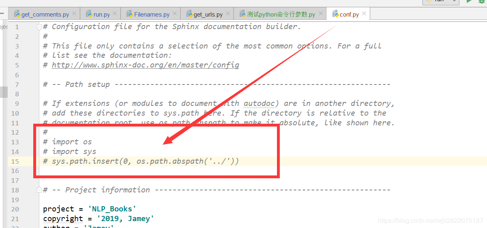
修改extensions为如下
1
2
3
4
5
|
extensions = [
'sphinx.ext.autodoc',
'sphinx.ext.todo',
'sphinx.ext.viewcode'
]
|
执行
sphinx-apidoc -o ./source ../
其中 ./source 为rst文件所在目录
使用make 查看可用的make命令
这里我们make html
12. 使用read the Doc 托管文档
看这网站logo, 难道大多数python包的文档都是托管到这的?
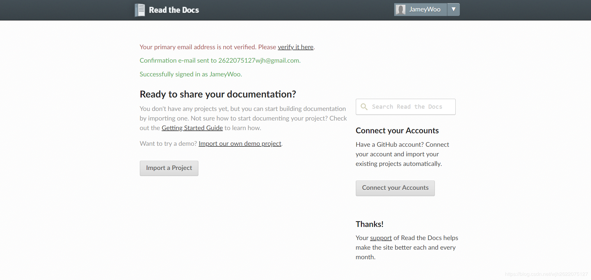
13. IDEA补全快捷键
1. for循环
打一个for循环, 些fori, 然后回车, 马上就有
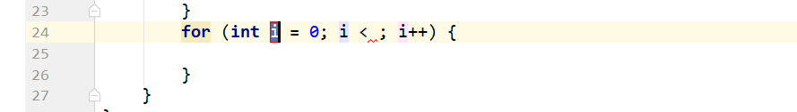
2. main函数补全
输入psvm然后回车
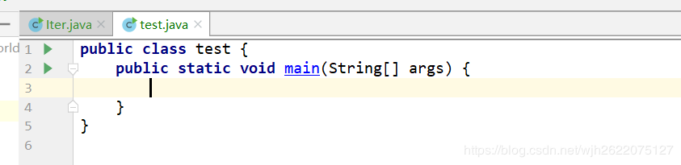
3.System.out.println();
输入sout, 回车
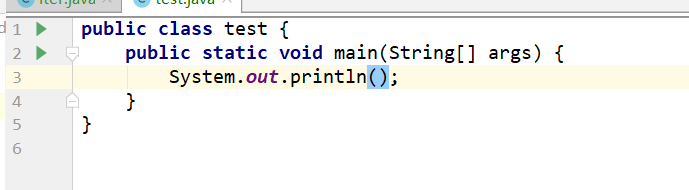
4. 按ctrl+j查看所有代码生成
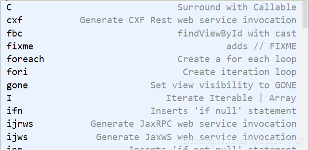
参考: https://juejin.im/entry/5a0eaf38f265da431955d9a6
5. 自定义自己的快捷键
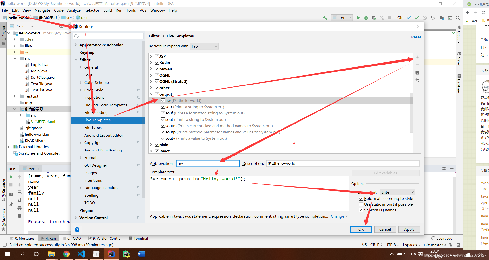
https://blog.csdn.net/qq_27093465/article/details/52691572
6. 技能表
https://www.cnblogs.com/jx17/p/6244491.html
14. 使用mkdocs生成快速文档
mkdocs能够根据markdown快速生成文档网站, 然后部署在github page上, 这样可以给每个项目都部署一个文档网站了
比如这个文档页面, 就是我用来测试mkdocs效果的页面
效果如图
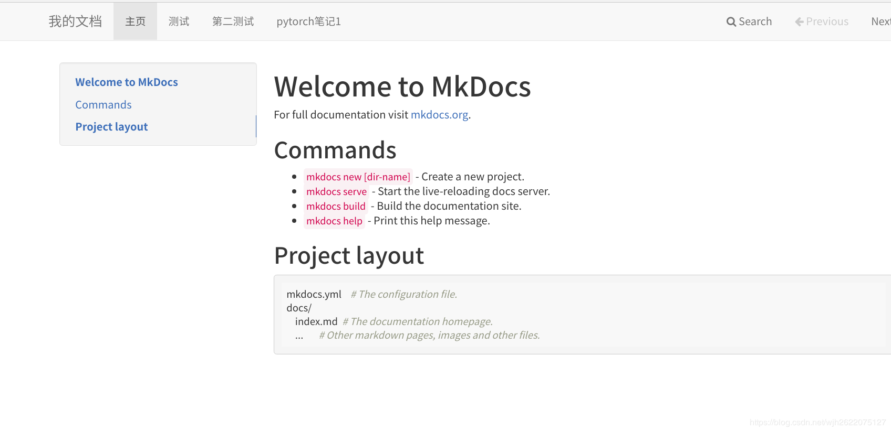
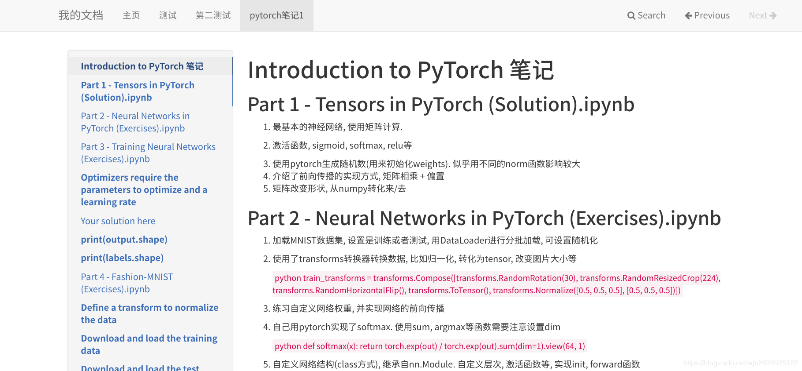
可以方便地更换各种主题
甚至可以单独把它作为一个博客网站来玩
输入命令mkdocs -h 即可查看他的功能
1
2
3
4
5
6
7
8
9
10
11
12
13
14
15
16
|
(torch)$ mkdocs -h
Usage: mkdocs [OPTIONS] COMMAND [ARGS]...
MkDocs - Project documentation with Markdown.
Options:
-V, --version Show the version and exit.
-q, --quiet Silence warnings
-v, --verbose Enable verbose output
-h, --help Show this message and exit.
Commands:
build Build the MkDocs documentation
gh-deploy Deploy your documentation to GitHub Pages
new Create a new MkDocs project
serve Run the builtin development server
|
15. github gist
代码片段管理服务
今天偶然知道了github还提供这样一个服务, 之前知道贴代码可以用Pastebin.
简而言之就是大家可以把自己的代码片段贴上去, 然后分享. 支持匿名, 私密, markdown等.
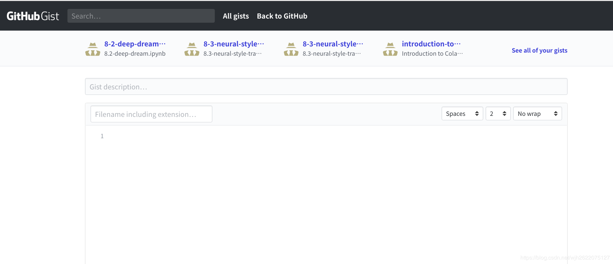
而且我突然发现之前我colab上有一个选项保存到github gist上就是这个! 恍然大悟.
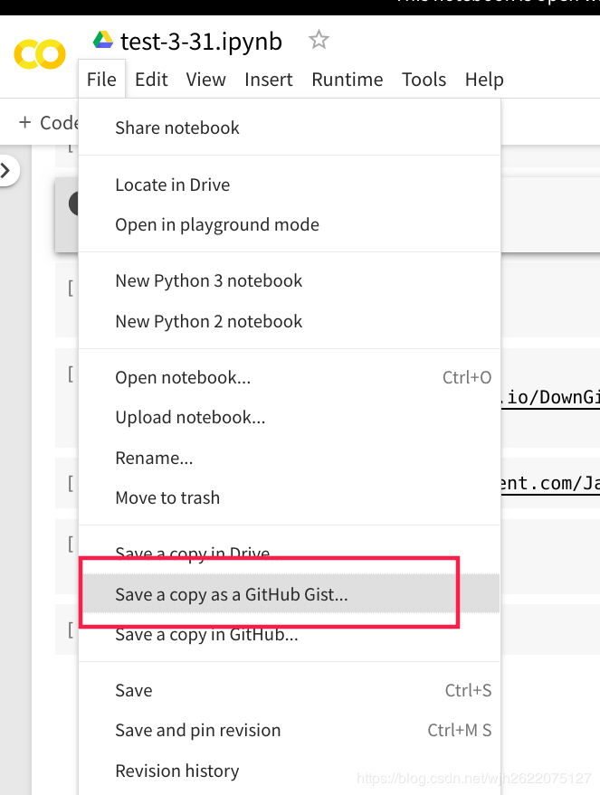
在gist链接后面加一个.pibb后缀, 直接将这部分内容变成一个干净的html网页了.